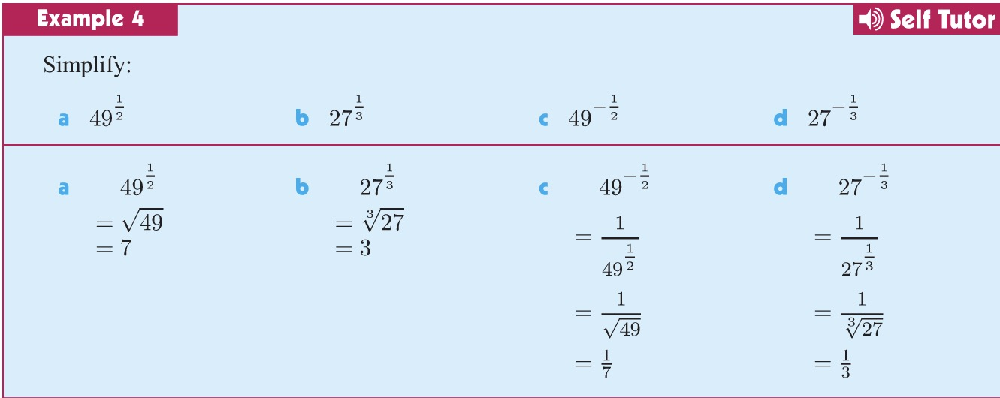

Chapter 1 - Indices
1.1 - Introduction
In mathematics, indices refer to the power to which a number is raised.
For example, in the expression 23,
- the number 2 is called the base
- the number 3 is called the index (or the exponent).
The expression 23 is read as "two to the power of three" or "two cubed".
23=2×2×2
More generally, if n is a positive integer, then an is the product of n factors of a.
an=a×a×a×…×a
Exercise 1.1

1.2 - Laws of Indices
- am×an=am+n
- anam=am−n
- (am)n=amn
- (ab)n=an×bn
- (ba)n=bnan
- a0=1, (a=0)
- a−n=an1
Except for 6, the above can be derived from the definition of indices.
Exercise 1.2
Try to derive 1 and 2 from the definition of indices.
Exercise 1.3

1.3 - Rational Indices
Review - Negative Indices
a−n=an1
Rational Number
Rational numbers are numbers that can be expressed as a fraction of two integers.
qp
where p and q are integers and q=0.
- Example 1: 21 is a rational number because it can be expressed as qp, where p=1 and q=2.
- Example 2: Is π a rational number? Is 2 a rational number?
Could you give an example like the above?
Roots
The nth root of a number a is a number b such that bn=a.
na=b
when n is 2, we usually omit the index.
a=b
- Example 1: 9=3 because 32=9.
- Example 2: 38=2 because 23=8.
Could you give an example like the above?
Converting Rational Indices to Roots
We can extend the definition of indices to rational numbers.
The 1/n-th power of a number a is equal to the n-th root of a.
an1=na
- Example 1: 221=2
- Example 2: 231=32
- Example 3: 49−21=491=71
Could you give an example like the above?
Converting Roots to Rational Indices
It also works the other way round.
na=an1
- Example 1: 2=221
- Example 2: 32=231
- Example 3: 491=49−21
Could you give an example like the above?
Unifying Laws in Square Roots and Rational Indices
2×2=2
is equivalent to
221×221=21=2
Could you give an example like the above?

Universal Laws of Rational Indices
Positive Rational Indices
anm=nam
In order to understand this, we need to understand the meaning of anm.
anm=(am)n1=nm timesa×a×…×a=nam
Another way to understand this:
anm=(an1)m=m times(na)×(na)×…×(na)=nam
Negative Rational Indices
a−nm=anm1=nam1
- Example 1: 232=322=34
- Example 2: 2−32=2321=3221=341


1.4 - Scientific Notation
Scientific notation is a way of writing numbers that are too big or too small to be conveniently written in decimal form.
It involves writing a number as a product of a number between 1 and 10 and a power of 10.
Observe
Example 1
89 zeros000000000=8×109
Example 2
0.10 zeros00000000005=5×10−11
Questions